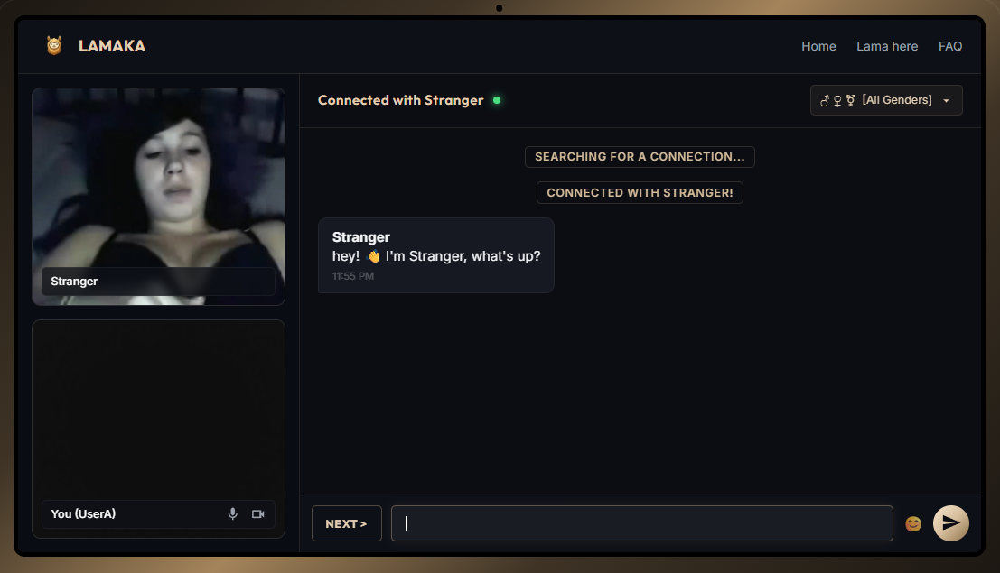

FIND YOUR HERD.
START THE CHAT.
LAMAKA is your destination for meaningful connections and engaging conversations. Discover, connect, and thrive.
MEET YOUR NEXT CONNECTION
Join millions of LAMA members worldwide. One click to start — no account, no downloads, just real conversations.

FEATURES DESIGNED FOR HERD COMFORT
We make meeting new people safe, fun, and extremely polished.
Detailed Matching
Our advanced herd algorithm matches you with llamas that share your vibes and conversational interest. Filter by tags, languages, or specialized llama herds.
Seamless Messaging
Switch between high-definition video chat and instant text messaging seamlessly. Send emojis, reactions, and keep conversations rolling naturally.
Global Community
Connect with friendly llamas from all around the world. Expand your horizons, share unique cultures, and meet interesting characters without boundaries.
HEAR FROM OUR HERD
Read reviews from active llamas who found their perfect conversation circle.
"You are bound to find amazing conversations here. Met three new llamas today from across the Andes and had an awesome vibe!"
"I turned my camera on and had a deep talk within my first minute. The interface is premium, smooth, and feels incredibly safe."
"I made quickly-knit community connections with llamas of refined taste. The gold aesthetics are spectacular!"
What is LAMAKA? (The Ultimate Omegle Alternative)
Welcome to LAMAKA, the internet's fastest-growing and most premium free random video chat platform. Since the closure of classic platforms, users worldwide have been searching for a high-quality Omegle alternative that doesn't compromise on safety, aesthetics, or speed. LAMAKA fills that void by offering lightning-fast, peer-to-peer web cam chat with strangers online. Our proprietary matching algorithm connects you with like-minded individuals globally in under three seconds.
Whether you want to talk to strangers online, practice a new language, or just make friends, LAMAKA provides a seamless, immersive full-screen experience. You don't need to download any sketchy software or plugins—our platform works entirely in your modern web browser (Chrome, Safari, Firefox, Edge). Plus, with advanced filtering options, you can choose exactly who you want to meet. Join millions of users on the best random video chat app of 2026.
How to Talk to Strangers Safely Online
Safety is our top priority. When you use a free webcam chat online, you want to ensure your data and identity are protected. LAMAKA utilizes end-to-end encryption for all video streams, meaning your private conversations stay private. We do not record or store your video feeds on our servers. As the premier anonymous chat site, we allow you to connect without creating an account or providing personal details.
To stay safe while using any stranger cam chat, remember the golden rules: never share your real name, address, or financial information. Utilize our built-in reporting and blocking tools if you encounter anyone violating our community guidelines. Our AI-driven moderation tools actively scan for inappropriate behavior, making LAMAKA the safest random video chat space on the web.
Why is LAMAKA the Best Web Cam Chat in 2026?
We built LAMAKA from the ground up to solve the biggest problems with old-school chat roulette sites. While others suffer from constant lagging, intrusive ads, and bot-filled rooms, LAMAKA offers a pristine, gold-themed interface that prioritizes the user experience. Our video chat room architecture uses modern WebRTC technology for crystal-clear, zero-latency 1080p streaming.
Furthermore, our "Herd Matching" system categorizes users intelligently. Whether you are looking for a casual chat, a deep conversation, or a fun interaction with our simulated "Drama Llamas," you are always one click away from an engaging connection. It's not just a chat app; it's a vibrant, global community.
Is LAMAKA a Free Random Video Chat App?
Yes, absolutely! LAMAKA is a 100% free random video chat app. There are no hidden fees, no premium subscriptions to unlock basic features, and no credit card required. We believe that connecting with people around the world should be accessible to everyone. You get instant access to high-quality live video chat with strangers completely for free.
How Do I Start Chatting with Strangers?
Getting started on LAMAKA is incredibly simple. You don't need to download any software or register for an account. Just click the "Start Chatting" button, grant browser permissions for your camera and microphone, and our algorithm will instantly pair you with a random stranger. It's the fastest way to meet new people online and dive into a stranger video call.
Can I Filter Who I Match With?
Yes. While the core experience is a random chat with strangers, LAMAKA provides essential filtering options. You can use our gender filter to specify whether you want to match with guys, girls, or everyone. This helps tailor your stranger cam experience to your preferences, making every connection more meaningful.
Does LAMAKA Work on Mobile Phones?
Definitely! LAMAKA is fully optimized for mobile browsers. You don't need to download an app from the App Store or Google Play. Whether you're on an iPhone or an Android device, simply visit our website to enjoy a seamless mobile video chat experience. Talk to strangers on the go with the same crystal-clear video quality.
What Makes LAMAKA Different from Chatroulette or Shagle?
LAMAKA represents the next generation of chat roulette alternatives. Older platforms like Chatroulette, Shagle, or Emerald Chat often struggle with outdated designs, slow connections, and poor moderation. LAMAKA offers a luxurious, dark-themed UI, lightning-fast WebRTC connections, and robust AI moderation, ensuring a far superior and safer webcam chat environment.
Is My Chat Truly Anonymous?
Yes, LAMAKA is a strictly anonymous video chat platform. We do not ask for your name, email, or any personal details. Your identity remains completely private unless you choose to share information with your chat partner. We strongly advise users to maintain their anonymity to ensure a safe and enjoyable anonymous chat experience.
Can I Text Chat Instead of Video Chat?
While LAMAKA specializes in live video chat, we understand that not everyone wants to be on camera all the time. Our platform includes a fully functional text chat interface alongside the video feed. You can easily communicate via text, use emojis, and enjoy a rich chat room experience even if you decide to mute your mic or disable your camera.